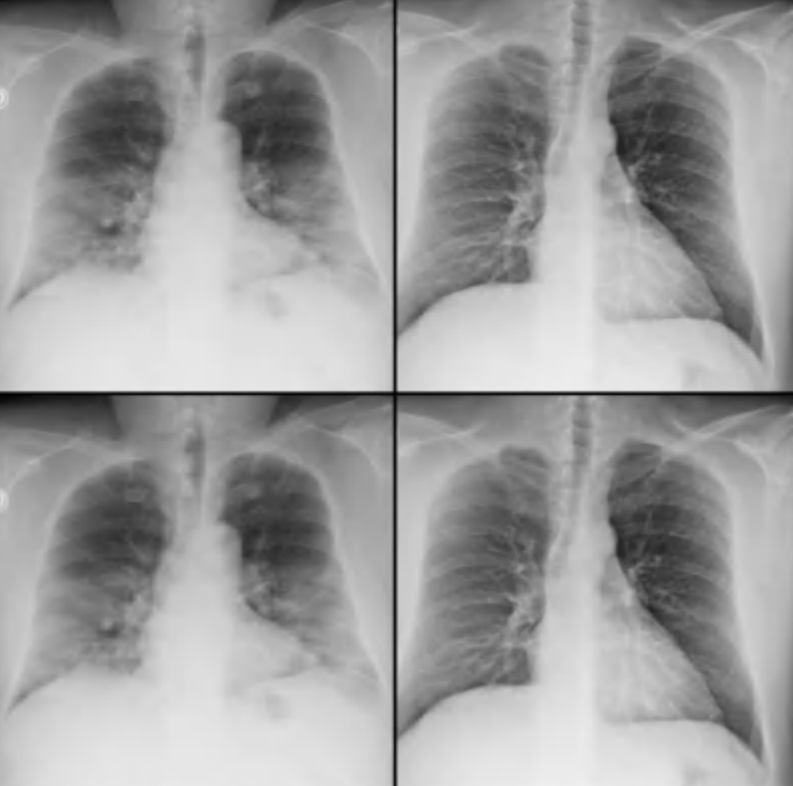
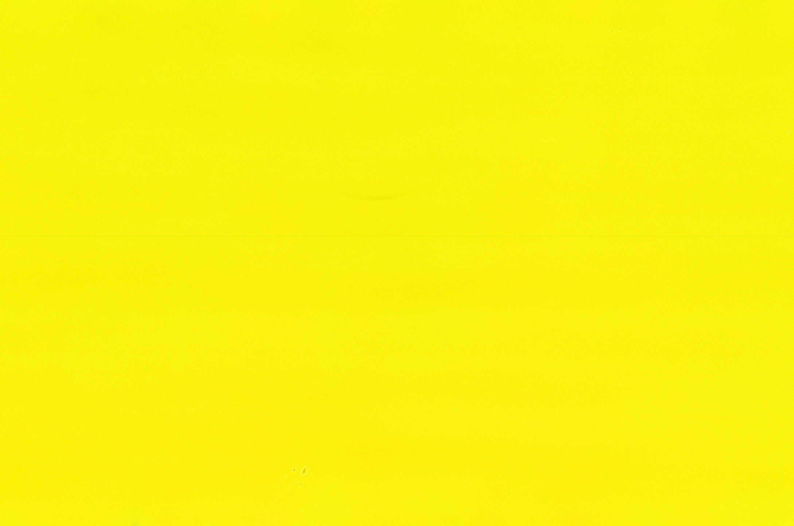

Trust the Hand
2026
Lessons from 15 years of applied co-design for soft manipulation.

Acoustic Sensing for Universal Jamming Grippers
2025–2026
Using acoustic sensing to enable universal jamming grippers to feel objects through sound.

Learning or Compliance?
2025
Investigating the role of learning and compliance in dexterous manipulation.

Stop Merging, Start Separating
2025
Separating the general from instance-specific information yields improved manipulation.

Research Blog Posts
2023
Two blog posts on self-supervised monocular depth estimation and label-efficient semantic segmentation.

Unsupervised Semantic Segmentation
2023
Analyzing STEGO's inner workings for safe unsupervised semantic segmentation.

Deep Learning for Medical Imaging
2020
A uni-project implementing deep learning for COVID-19 detection from chest X-rays at the height of the pandemic.

Machine Learning for Computer Graphics
2020
A uni-project developing a self-supervised method for class and content disentanglement.

Robotic Hand Simulation Stack
2020–2021
A ROS/Gazebo simulation stack for a robotic hand with grasp-analysis metrics, packaged as a pre-built Docker container.

Tactile Grasp Refinement
2020–2022
Master thesis research on tactile sensing for learning and deploying robotic grasping controllers.

Gesture-Based Teleoperation for Robotic Manipulation
2019
A modular ROS platform for intuitive control of a robotic rig with gesture tracking, enabling remote teleoperation via virtual reality.

Neuroprosthetics Course
2019
A uni-project implementing neural models, cochlear implant coding strategies, and auditory simulations.

Augmented Reality for Orthopedic Trauma Surgery
2018
My Bachelor thesis studying how Augmented Reality (AR) can support orthopedic trauma surgeons with 3D visualizations of complex bone fractures.